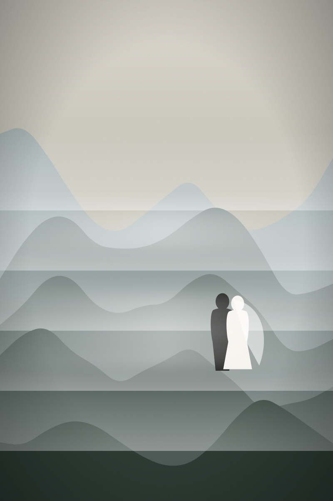
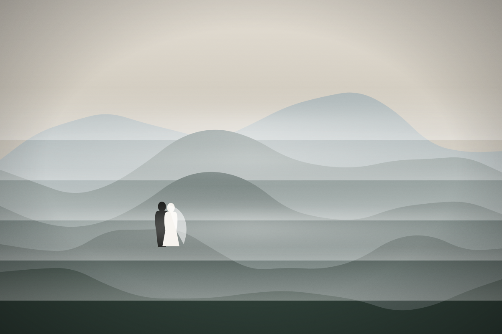
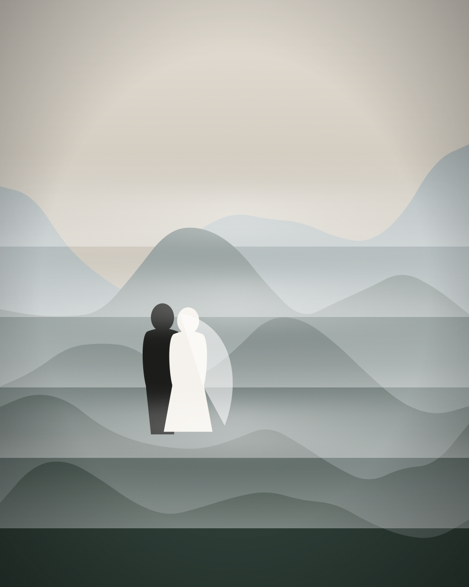
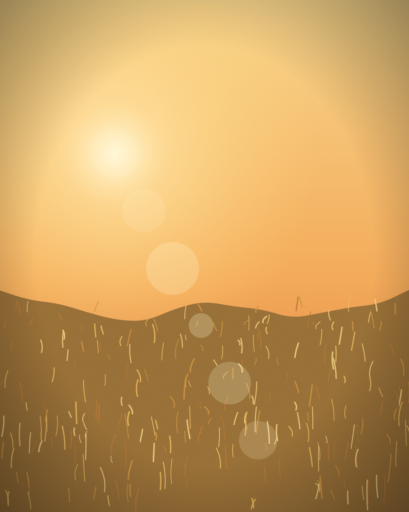
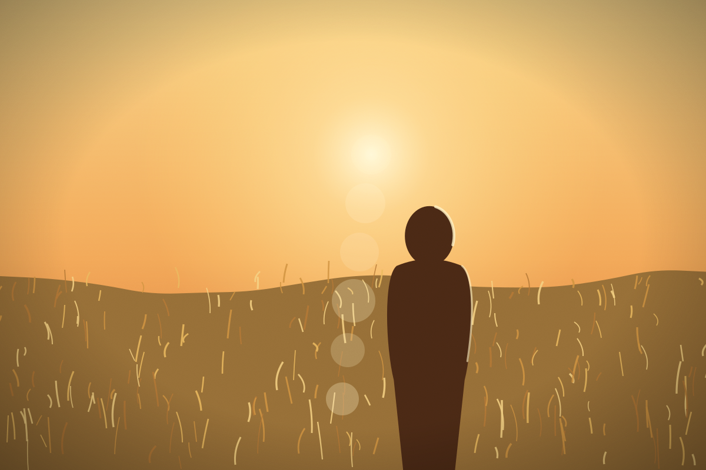
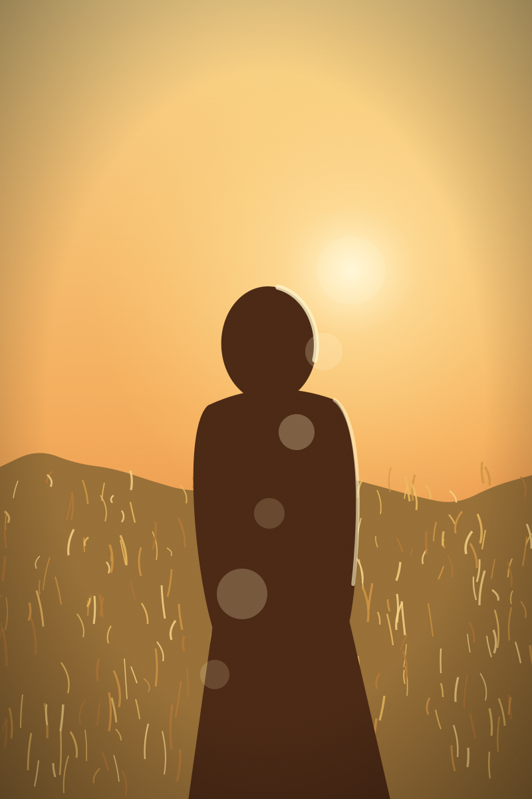
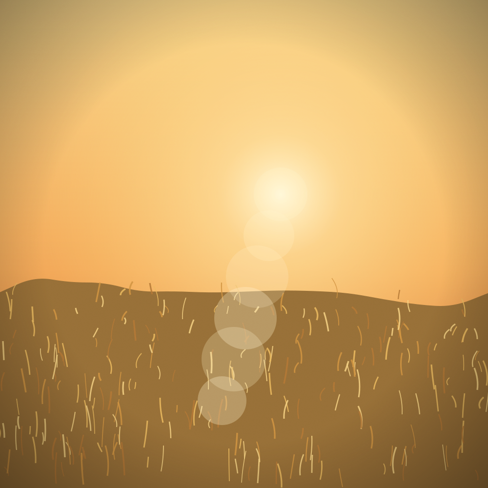
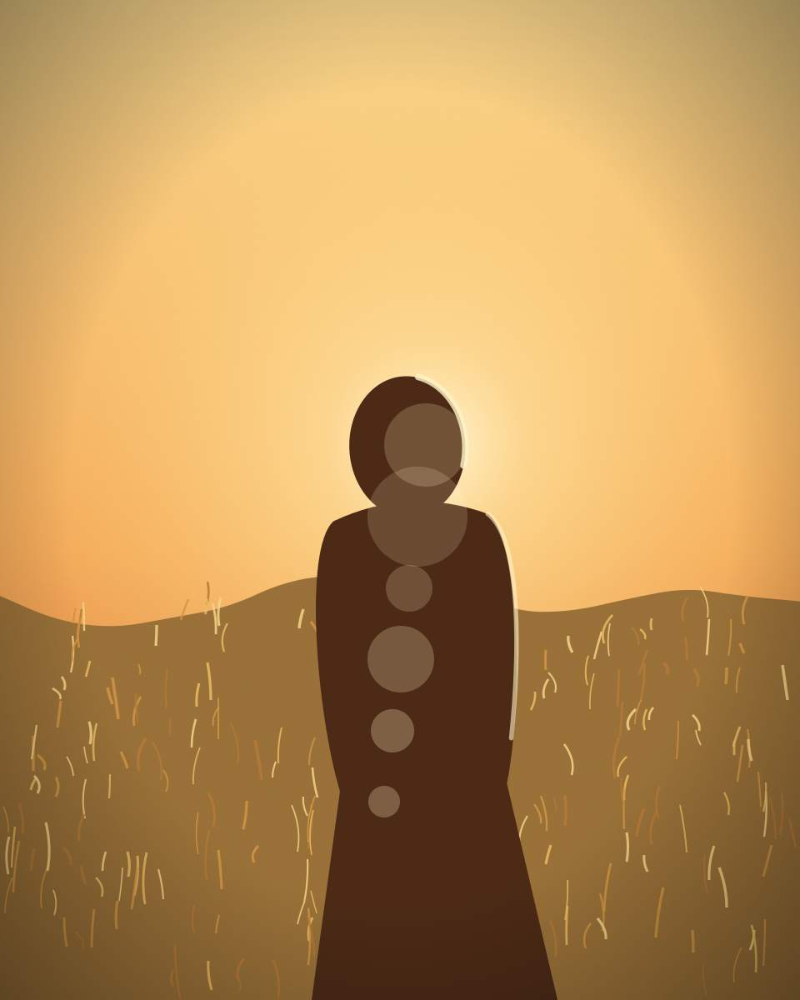

Client proofing
Choose your album photos
Giulia & Theo, here are your favourites from the shortlist. Tap the heart on up to 15 photographs for the linen album. Your choices are saved in this browser until you send them.
Take your time: you can change your choices and send the selection again until I start laying out the album.
0 of 15 selected















You haven't selected any photographs yet.
Thank you
Selection received
Your reference is . I’ll send you a first layout of the album to approve within three weeks.